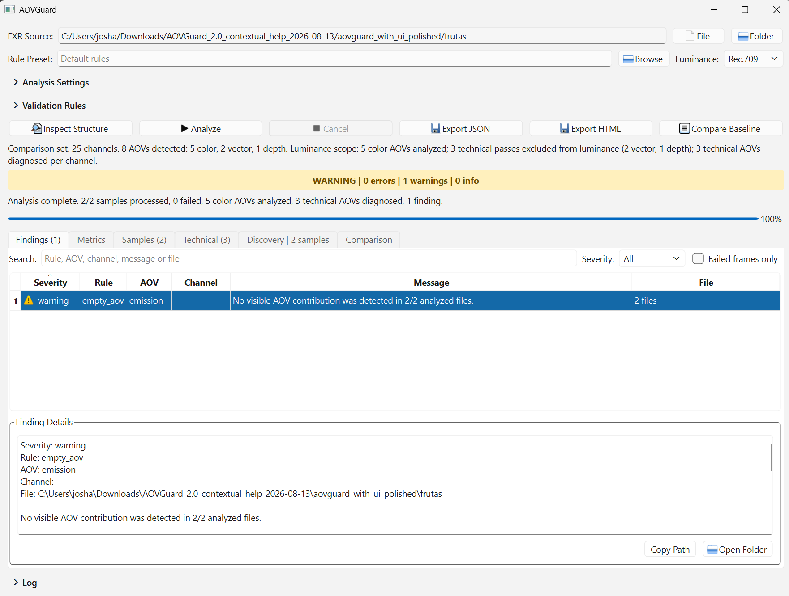

Structure before assumptions
Channels and metadata establish how each AOV is handled. Colour, technical, Cryptomatte and unknown data retain appropriate diagnostics without forcing one interpretation onto every pass.
08 / PIPELINE DEVELOPMENT
Open-source quality control for OpenEXR files, AOVs and render sequences before compositing or publishing.
Open-source MSc project · stable release 1.2.1 · MIT License
 Autodesk Maya
Autodesk Maya
 Python
Python
 AOVs
AOVs
/ OVERVIEW
I designed and developed AOVGuard to inspect rendered EXR files and identify common technical problems before they reach later stages of a lighting or compositing pipeline. The goal is to reduce repetitive manual checking and help artists find potentially problematic renders more quickly.
The current public implementation automatically inspects EXR parts and channels, normalises colour passes to a canonical RGB convention and diagnoses technical AOVs per channel. Standard Cryptomatte metadata keeps encoded IDs out of luminance and temporal-outlier calculations while preserving integrity checks.
A shared report model serves the PySide6 interface, command line, strict JSON and self-contained HTML exports. Stable release 1.2.1 adds temporal charts, robust outlier review and direct frame navigation; the current repository also verifies expected frame ranges and Cryptomatte-aware analysis.
/ SYSTEM DESIGN
The architecture keeps discovery, reading, analysis and presentation separate while the CLI, GUI and exporters share the same report.

Channels and metadata establish how each AOV is handled. Colour, technical, Cryptomatte and unknown data retain appropriate diagnostics without forcing one interpretation onto every pass.
Robust temporal statistics expose unusual luminance changes. Charts, an ordered Outliers view and Locate Selected Frame connect an aggregate warning to its evidence.
GUI and CLI share the same typed models, while strict reports, baseline comparison, deterministic exit codes and bounded discovery support publishing checks.

Structure inspection, configurable rules, findings-first review, technical diagnostics, baseline comparison and JSON/HTML export from one PySide6 application.
Select the image to view full size ↗
61 Maya/Arnold frames, 51 channels and 18 inferred AOVs, with no missing frames, duplicates or read failures. Figure 6 from the dissertation.
Select the image to view full size ↗/ EVALUATION
Current-main verification recorded in the public repository on 24 September 2026. Stable release: 1.2.1. The speed figure comes from the documented 12-frame, five-AOV controlled benchmark and is not a production-throughput claim.
A controlled benchmark used 12 generated 320 × 180 frames, five AOVs and 30 repetitions per strategy on one Windows workstation. Frame-first processing reduced application-level reader calls from 60 to 12 while preserving the output checksum. Median elapsed time changed from 0.4387 s to 0.1181 s; Python-tracked peak memory increased from about 5.55 MB to 11.08 MB.
The result supports this processing change under those conditions. Native decoder allocations were not fully measured, and the timing ratio is not a general production-performance claim.
A separate in-memory scalability check processed 100, 500 and 1,000 frames in approximately linear time for its small 64 × 36 fixture, reaching 0.505 seconds and 2.206 MB of Python-tracked peak memory at 1,000 frames. It excludes OpenEXR decoding, filesystem I/O and full-resolution native allocations.
Current analysis supports regular RGB/RGBA and named multilayer EXRs. Deep and multipart files are detected but not analyzed. Cryptomatte classification depends on standard metadata or an explicit preset; renderer-specific artistic interpretation and show-calibrated thresholds remain the user's responsibility.
Individual project by Joshua Medina.
Developed as my Master’s project at Bournemouth University.
Source code, documentation and release history: github.com/Joshmedinag/AOVGuard